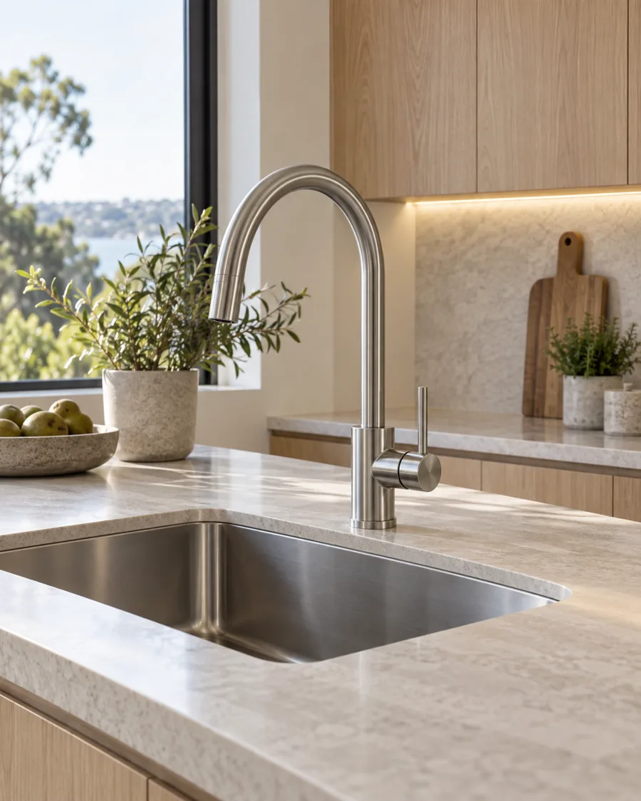

01
General plumbing and maintenance
Overview of common plumbing tasks for residential properties and routine maintenance. Availability to tailor to your needs.
Discuss this servicePlumbing enquiries
Your local plumbers in Sunbury, VIC. Fast response, transparent pricing and clear communication for every job.
Discuss your job, location and availability directly.

AI-generated illustrationWhat can we help with?
Suggested service topics for this concept. Confirm which services the business offers when you call.
Overview of common plumbing tasks for residential properties and routine maintenance. Availability to tailor to your needs.
Discuss this serviceGuidance on handling urgent plumbing issues and what response times you can expect.
Discuss this serviceDiscussion of options, installation or servicing considerations. Availability to confirm specifics.
Discuss this serviceA clear next step
You do not need to know the technical name for the problem. Start with what you can see, hear or notice.
Discuss your jobDescribe the issue, your suburb and when you first noticed it.
Ask about availability, whether an assessment is needed and how pricing will be confirmed.
Confirm the scope, timing and any access requirements directly with the business.
Let’s talk plumbing
Speak with Taranto Bros Plumbing about the work you need. Have your suburb and a few details ready.
(03) 9068 7828Call to confirm service coverage, pricing and availability.
Have your suburb, a short description of the issue and your preferred timing ready. Ask about availability and the next steps.
This selector helps you prepare for a call. It does not send an enquiry or make a booking.
Before you call
Your suburb, the issue you are experiencing and when it started are useful. If you know the appliance or fixture model, have that ready too.
Ask the business how the job will be assessed and priced, including any call-out fees. The scope and cost need to be confirmed directly before you agree to work.
Call Taranto Bros Plumbing with your location to confirm service coverage and current availability.
This is a website concept, so online bookings and enquiry submissions are not enabled. The call links open the listed business phone number.
Made for your business · By WebLorosae
This concept is a starting point for Taranto Bros Plumbing. We’ll refine it with your logo, photos, services and business details, ready for your own domain.
Mobile-friendly design. Two rounds of revisions. A clear way for customers to contact you.
Optional Website Care: $39/month. Or manage your own hosting. Domain registration is separate.
I’d like this website See pricing and what’s included